This page shows the various Interpolator instances defined in the Interpolations class. The name is provided next to the graph to easily copy an Interpolator name into your code.
| Graph A | Name A | Graph B | Name B | Graph C | Name C |
|---|---|---|---|---|---|
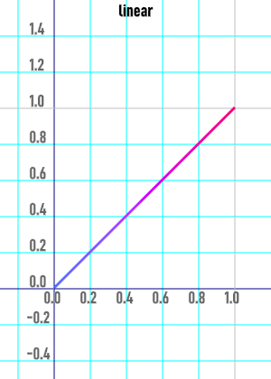 | linear | smooth | 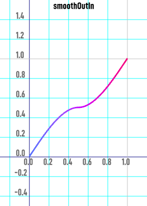 | smoothOutIn | |
| smooth2 | 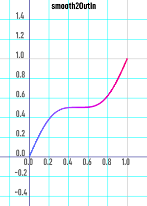 | smooth2OutIn | smoother | ||
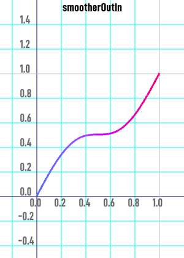 | smootherOutIn | 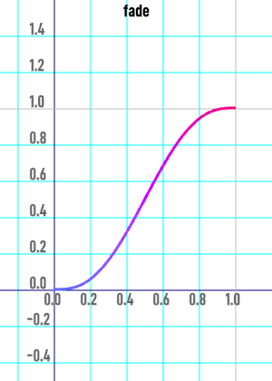 | fade | fadeOutIn | |
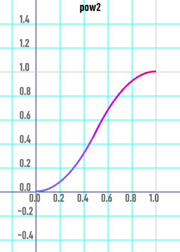 | pow2 | 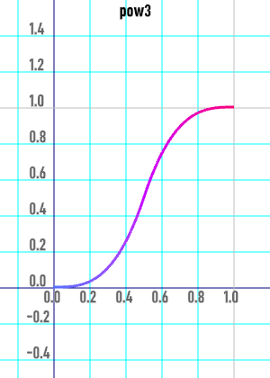 | pow3 | 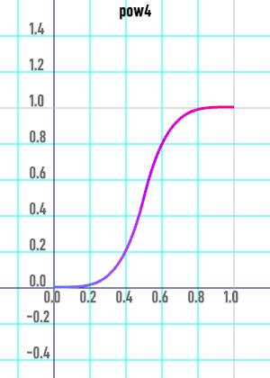 | pow4 |
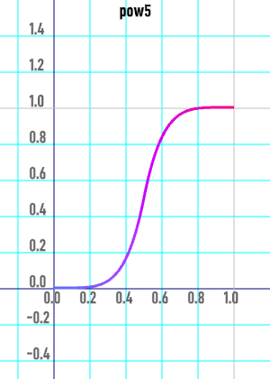 | pow5 | 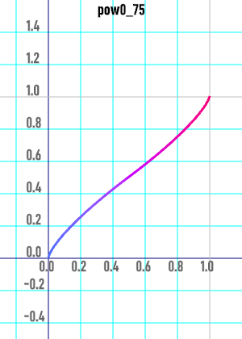 | pow0_75 | 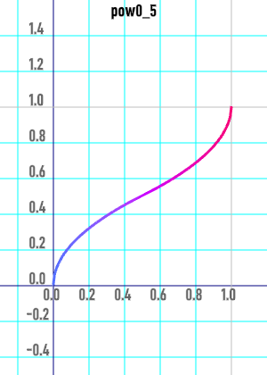 | pow0_5 |
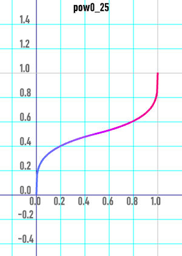 | pow0_25 | 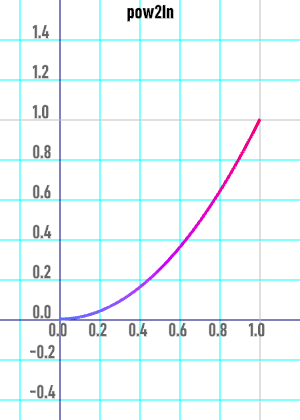 | pow2In | 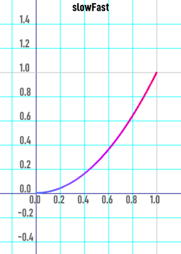 | slowFast |
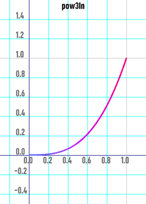 | pow3In | 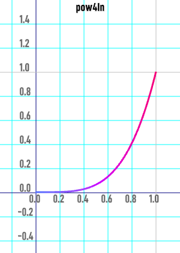 | pow4In | 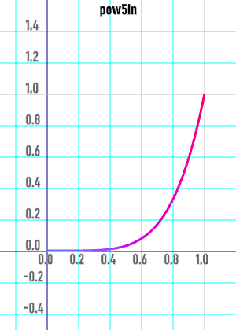 | pow5In |
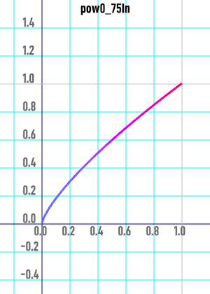 | pow0_75In | 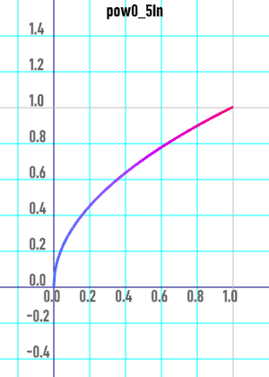 | pow0_5In | 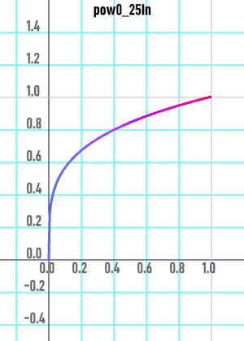 | pow0_25In |
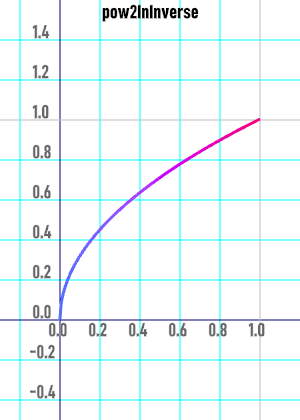 | pow2InInverse | 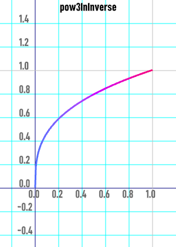 | pow3InInverse | 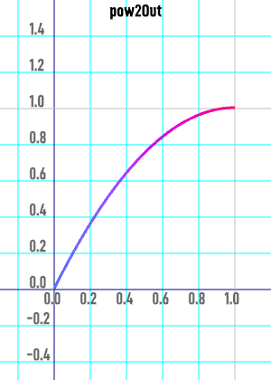 | pow2Out |
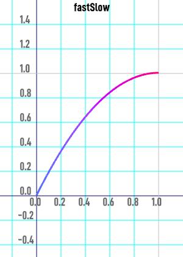 | fastSlow | pow3Out | 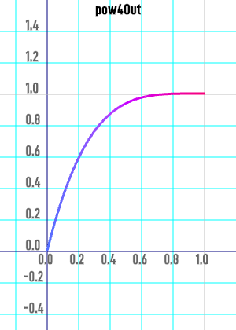 | pow4Out | |
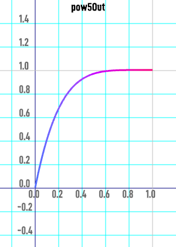 | pow5Out | 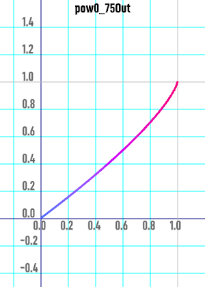 | pow0_75Out | 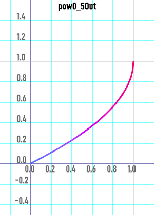 | pow0_5Out |
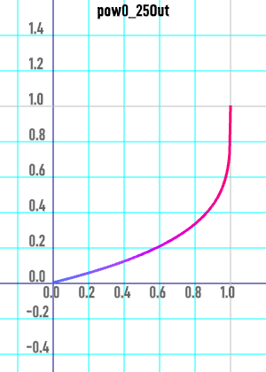 | pow0_25Out | 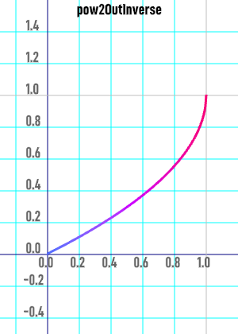 | pow2OutInverse | 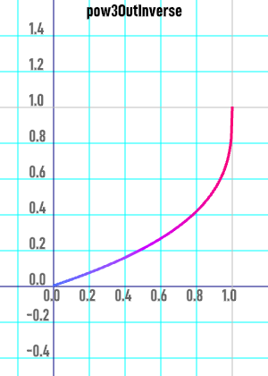 | pow3OutInverse |
| pow2OutIn | 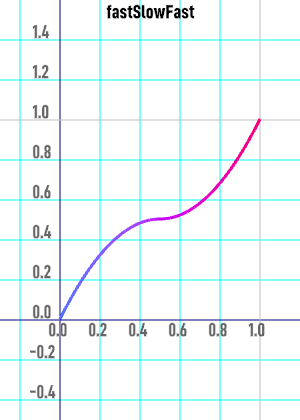 | fastSlowFast | 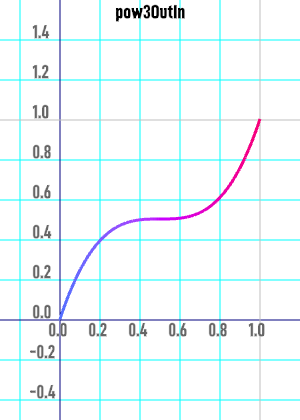 | pow3OutIn | |
| pow4OutIn | 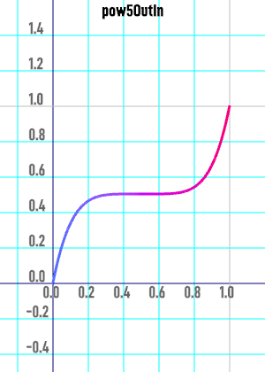 | pow5OutIn | 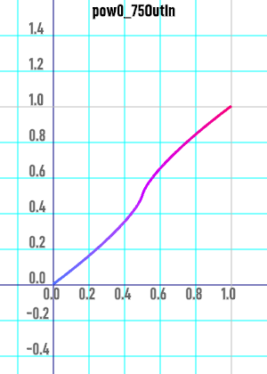 | pow0_75OutIn | |
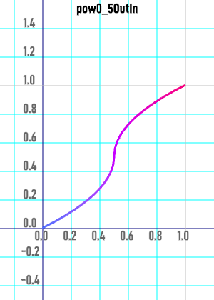 | pow0_5OutIn | 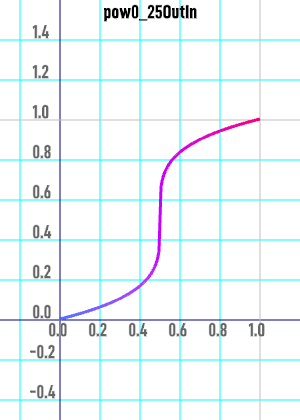 | pow0_25OutIn | exp5 | |
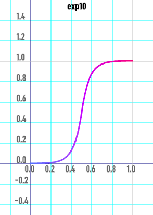 | exp10 | 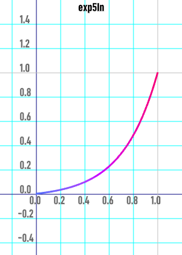 | exp5In | 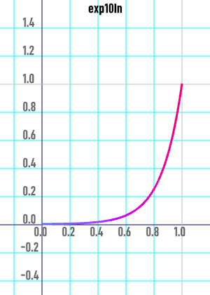 | exp10In |
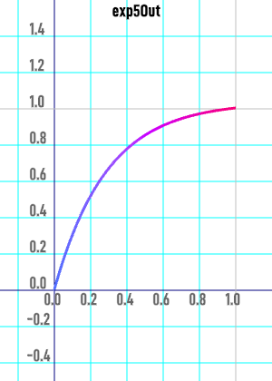 | exp5Out | 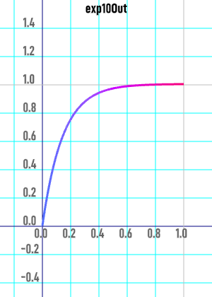 | exp10Out | 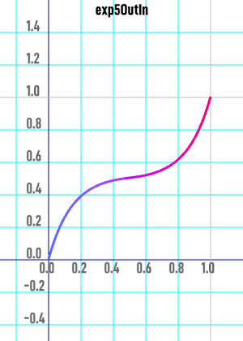 | exp5OutIn |
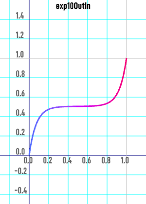 | exp10OutIn | 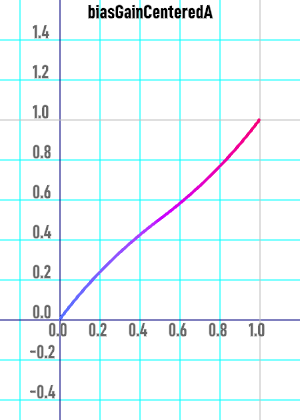 | biasGainCenteredA | 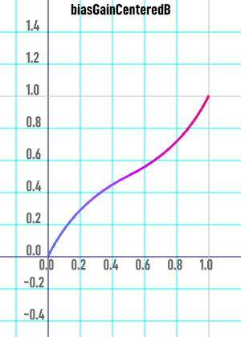 | biasGainCenteredB |
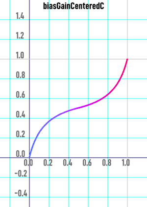 | biasGainCenteredC | 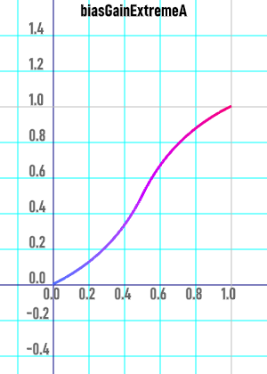 | biasGainExtremeA | 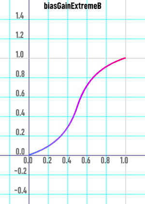 | biasGainExtremeB |
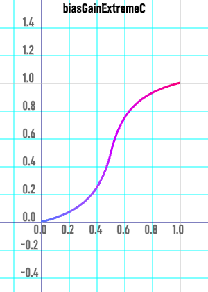 | biasGainExtremeC | biasGainMostlyLow | biasGainMostlyHigh | ||
| kumaraswamyExtremeA | kumaraswamyExtremeB | kumaraswamyExtremeC | |||
| kumaraswamyCentralA | kumaraswamyCentralB | kumaraswamyCentralC | |||
| kumaraswamyMostlyLow | kumaraswamyMostlyHigh | sine | |||
| sineIn | sineOut | sineOutIn | |||
| circle | circleIn | circleOut | |||
| circleOutIn | bounce2 | bounce3 | |||
| bounce4 | bounce | bounce5 | |||
| bounce2Out | bounce3Out | bounce4Out | |||
| bounceOut | bounce5Out | bounce2In | |||
| bounce3In | bounce4In | bounceIn | |||
| bounce5In | bounce2OutIn | bounce3OutIn | |||
| bounce4OutIn | bounceOutIn | bounce5OutIn | |||
| swing2 | swing | swing3 | |||
| swing0_75 | swing0_5 | swing2Out | |||
| swingOut | swing3Out | swing0_75Out | |||
| swing0_5Out | swing2In | swingIn | |||
| swing3In | swing0_75In | swing0_5In | |||
| swing2OutIn | swingOutIn | swing3OutIn | |||
| swing0_75OutIn | swing0_5OutIn | spring | |||
| springOut | springIn | springOutIn | |||
| elastic | elasticOut | elasticIn | |||
| elasticOutIn | quadInOut | quadIn | |||
| quadOut | quadOutIn | cubicInOut | |||
| cubicIn | cubicOut | cubicOutIn | |||
| quartInOut | quartIn | quartOut | |||
| quartOutIn | quintInOut | quintIn | |||
| quintOut | quintOutIn | expoInOut | |||
| expoIn | expoOut | expoOutIn | |||
| circInOut | circIn | circOut | |||
| circOutIn | back | backInOut | |||
| backOut | backIn | backOutIn |